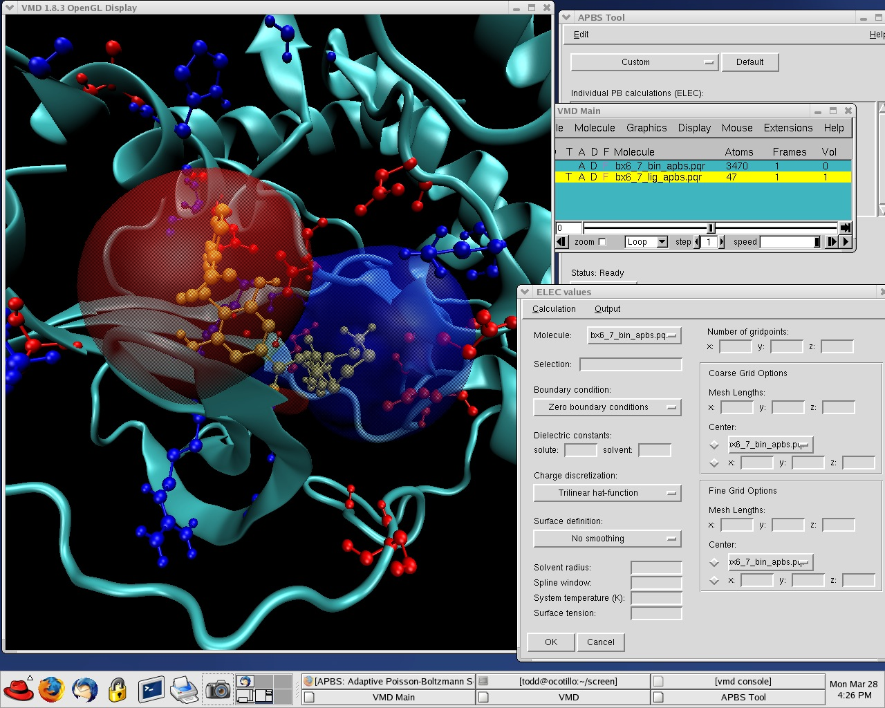

<style>div.cover{text-align: center}</style>
<section class="intro">
	<div class="grid">
		<div class="unit whole center-on-mobiles">
			<p class="first" style="color: #fff; font-weight: bold; margin-bottom: 50px;">APBS &amp; PDB2PQR: <br/> Electrostatic and solvation properties from complex molecules.</p>
			<a class="get_started_btn" href="{{ site.baseurl }}/docs/home"><h1>Get Started Now <i style="width: 14px; height: 14px; display: inline-block; background-image: url(img/rightArrow.png); background-repeat: no-repeat; background-size: 9px; margin-top: 5px; float: right"></i></h1></a>
		</div>
	</div>
</section>


<section class="features">
	<div style="padding-top: 10px;" class="grid">
		<div class="unit one-third">
			<h2>Repair and parameterize molecules</h2>

			<p>Use PDB2PQR to add missing atoms as well as assign charge and radius parameters from a variety of force fields.</p>

			<a href="{{ site.baseurl }}/docs/structures-ready/" class="">Preparing molecules &rarr;</a>
		</div>
		<div class="unit one-third">
			<h2>Assign titration states</h2>

			<p>Use PDB2PKA or PROPKA to determine the titration state of proteins at specific pH values.</p>

			<a href="{{ site.baseurl }}/docs/pdb2pqr-examples/" class="">Assigning titration states &rarr;</a>
		</div>
		<div class="unit one-third">
			<h2>Calculation solvation properties</h2>

			<p>Solve the Poisson-Boltzmann and related equations to calculate solvation energies and electrostatic properties for analysis and visualization.</p>

			<a href="{{ site.baseurl }}/docs/visualizing-results/" class="">Visualizing molecules &rarr;</a>
		</div>
		<div class="clear"></div>
	</div>
</section>
</div>

<section class="quickstart">
	<div class="grid">
		<div class="unit golden-small center-on-mobiles">
			<h4>Looking for the old version?!</h4>
		</div>
		<div class="unit golden-large">
			<div class="shell">
				<p class="line"><a style="color: #000; text-decoration: underline" href="https://sites.google.com/a/poissonboltzmann.org/software/">Use the older version</a>.</p>
			</div>
		</div>
		<div class="clear"></div>
	</div>
</section>


<section class="free-hosting">
	<div class="grid">
		<div class="unit one-third">
			
		</div>
		<div class="unit two-thirds">
			<h2 class="center-on-mobiles">Easy visualization</h2>
			<p>APBS and PDB2PQR work with a variety of desktop molecular graphics software packages and offer simple visualization capabilities via the web without the need for any additional software.</p>
			<a href="{{ site.baseurl }}/docs/visualizing-results/" class="">Learn more about molecular visualization &rarr;</a>
		</div>
		<div class="clear"></div>
	</div>
</section>
